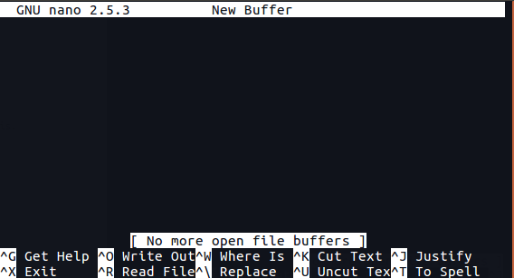
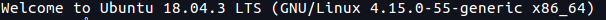

Today we will explore the world of HTML, the marking language used to build every website on the World Wide Web. In order to this we will also briefly look into IP addresses and the Secure Shell (SSH). NTNU hosts servers from where we can host our web sites. What a web server is will be explained tomorrow, but in the end it is just a computer that you can ask for a web site, and it will return the web site you asked for. Today we will be using the web server already hosted by NTNU to serve our web site out into the internet.
Finding your IP address and checking for connectivity
In a terminal of your Raspberry Pi you can easily find its IP address by using the command ip. Try and type the following command:
ip address
This command shows you all the existing IP addresses associated with your Raspberry Pi. These addresses are fundamental for connecting computers and other devices to each other and the Internet. Each network card (e.g. wireless card) is called an interface and it may have one or more IP addresses. A typical IP(v4) address at NTNU looks something like 129.241.200.112/24.
Write down the address and mask of the interface eth0.
Testing Internet Connectivity
By default, the Linux distribution we are using has a running service, or daemon, that automatically configures network interfaces whenever a new link is found. This service is called dhcpcd and runs a networking protocol called DHCP. You will learn more about this later in the course.
DHCP is also used to automatically configure the routes that are used to reach the Internet. You can find any route installed in your Raspberry Pi by typing the following command:
ip route
You should see a default route via the IP address 129.241.200.1, which corresponds to a router at NTNU responsible for forwarding our packets to and from the Internet.
To see if we can send something back and forth between two computers, we can use the command ping. It does exactly what it sounds like… It sends a “ping” message to the other computer, which then answers.
Try pinging that router with the command ping:
ping 129.241.200.1
You can also use the same command to ping other online machines such as the server hosting the website from the European Space Agency at www.esa.int. Can you see any significant difference from the previous ping command?
ping www.esa.int
Remote Access to a Computer
It is possible to access a Linux system and manage it remotely using different tools. One of the most popular ones is the Secure Shell, referred to as ssh. It is a program (or service) that waits for incoming SSH connections and then remotely controls the computer.
This service needs to be enabled in your Raspberry Pi with the following commands:
sudo systemctl enable sshsudo systemctl start ssh
Now, from your desktop PC with Linux you can access your Raspberry Pi using the IP address you found earlier and the command ssh as such:
ssh pi@<your_ip_address>
Note: a warning message should appear the first time you connect since the certificates being used have never been exchanged before. It is okay to say “yes” and then type in your password.
You now have access to the terminal of the Raspberry Pi, but without it being connected to monitor or keyboard. You access it remotely. In this way, it could really be anywhere else in the world. On your desk, in a room nearby, in a data center far far away!
Play around with some commands (pwd, cd, ls) to check if it is your Raspberry Pi and that navigation works as before, just via another computer.
Playing a sound… Remotely!
Now that you are remotely controlling your Raspberry IP issue the following command to download a simple sound file:
Now that you are remotely controlling your Raspberry Pi, issue the following command to download a simple sound file in wav format:
curl https://ttm4175.iik.ntnu.no/onesmall.wav -O
Connect the speakers to the audio jack on the Raspberry Pi, and see if it requires to be switched on or extra power via USB. Play the file with the following command:
aplay onesmall.wav
Setting up a web site
The web server that is hosted by NTNU runs in headless mode, which means that the machine has neither a monitor, mouse or keyboard. What we can do though, is remotely manage and control it through SSH. When we are connected, there is another challenge that we have to overcome in order to begin developing our website. The server is terminal-based, which means that everything you want to accomplish on the server must be done purely through the terminal, including writing and editing files. There are a few option for doing this. The three arguably most common text editors for the terminal is Vim, Emacs and Nano. Todays focus will be centered around Nano.
It is important to note that today, most servers in companies and businesses run in headless mode, as it makes the servers faster and easier to manage.
Nano
When getting used to the command-line, people who are new to Linux can be put off by other, more advanced text editors such as for instance Vim and emacs. While these two are excellent programs, they do have a bit of a learning curve. Nano is an easy-to-use text editor. It’s also installed in most Linux distributions, so you can usually rely on that it’s there.
To create a new file in Nano, we simply type nano in our terminal. Nano will open in a windows that looks something like this.

Now we can start typing the contents of the file.
Saving and exiting
If you want to save the changes you’ve made, press Ctrl + O. To exit nano, type Ctrl + X. If you ask nano to exit from a modified file, it will ask you if you want to save it. Just press N in case you don’t, or Y in case you do. It will then ask you for a filename. Just type it in and press Enter.
Open already existing file
To open an already existing file in Nano, we write nano path/to/filename or simply nano filenameif you are in the correct folder path. Saving and exiting is the same as above.
Check out this list of useful commands used in Nano: Nano Cheatsheet
2. Connecting to the server
As mentioned, we will use SSH to connect to the NTNU server.
Open a terminal window
type ssh <ntnu_username>@login.stud.ntnu.no and press enter
Enter you password
You should get a message that looks like this:

You are now successfully connected to the server. Here you have access to the files on the server and all the programs that are installed here. As demonstrated by playing a sound file on the Raspberry Pi earlier, everything you do in this terminal is executed on the server.
Step 3: Making a Website
NTNU has made a solution for students to create their own website and immediately publish them on the internet.
HTML
Hyper Text Markup Language (HTML) is a language for creating a webpage. Webpages are usually viewed in a web browser. They can include text, links, pictures, and even sound and video. HTML is used to describe each of these kinds of content so the web browser can display them correctly.
Websites on the internet are written in HTML. Each HTML file is just a plain text file, but with a .html file extension instead of .txt. To see the HTML code that lies behind any website, open Firefox and navigate to any website that you like. Then, right click on the page and choose View Page Source. This will take you to the underlying HTML code for this site that your browser uses to present the site in a viewable way.
Creating the Website
Although This guide explains how to set it up, in simple terms, the steps are as follows
In the terminal connected to the server via SSH, navigate to the folder /web/folk/<ntnu_username>.
Here, create a file with Nano called index.html.
The reason we make a file called index.htmlis because the server will automatically look for a file with this name, and publish the website that is written in this file.
Write your HTML code and save the file.
Navigate to https://folk.ntnu.no/<ntnu_username>in your browser to view you website.
You can find a sample HTML page here. Copy and paste these into your index.html or try to find another HTML file online. If you want, you can also clone some websites by copying the source code found by viewing the page source. Have a look at the source of ‘https://nrk.no’ for instance.
Final Steps
Learning Goals
In your double-team, reflect about what you learned today. Write a few sentences that capture (in your own words) what you learned and why it can be useful. Share these few sentences with everyone in the double-team. (You should use this text in the individual reflection below.)
Store the box in one of the lockers in the lab, using the combination lock.
Connect all parts of the PC back to it (keyboard, mouse, monitor).
Take out any trash. (Even if its not yours… thank you!)
Put the chairs back to the table.
Individual Exercises
We recommend that you take some time to consider if there are any parts of this unit that you want to repeat individually, at your own pace. If you decide to do so, you have several options:
You have access to the hardware box at all times from the lockers. Just make sure everyone in your team knows where the box is, and put it back into the locker.
Install a Raspberry Pi Image on a Virtual Box in your PC. With this, you always have a Raspberry Pi with you.
Some of the Linux-related exercises also work on the Linux-PCs in the lab.